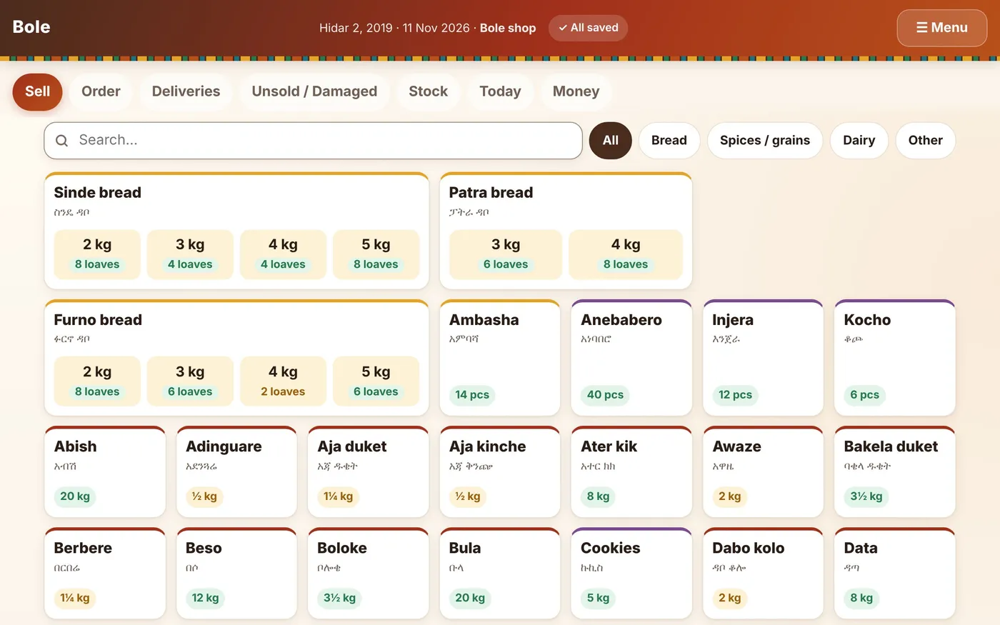
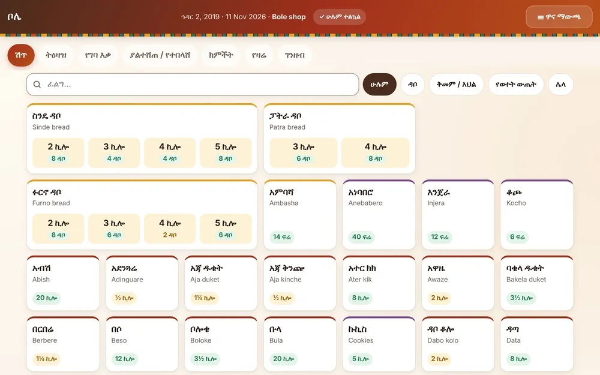
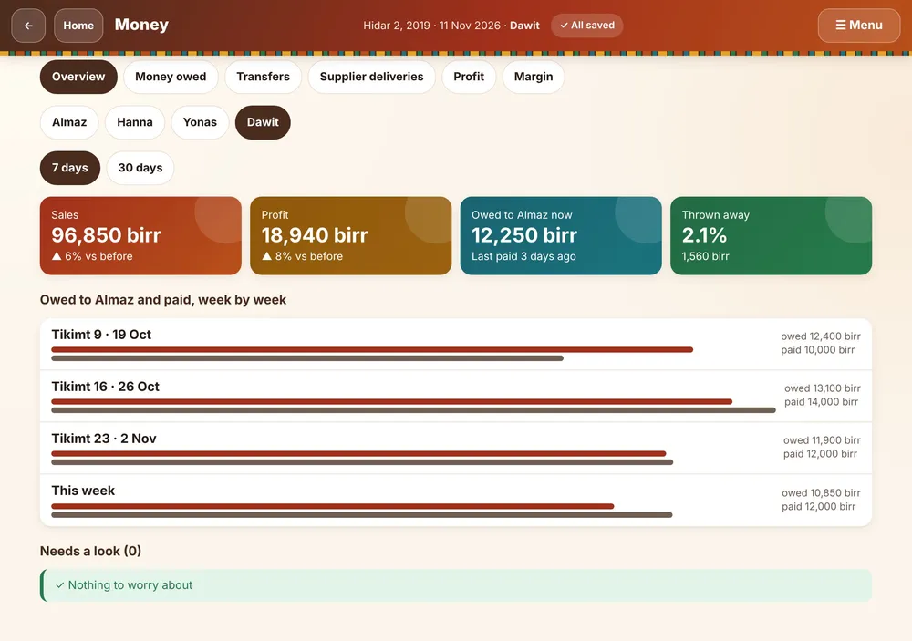
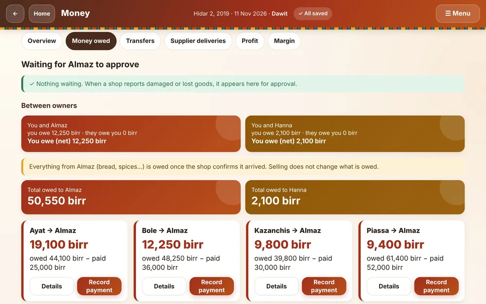
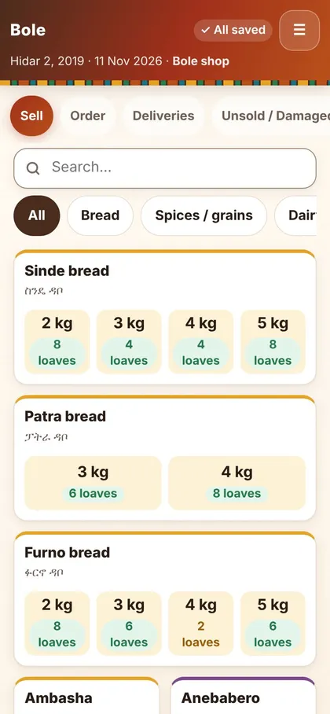

Baltina · 2026 · solo developer
Inventory and money tracking for a 7-shop family business
A family business in Addis Ababa supplies spices and bread to 7 shops run by 4 owners. Stock and money lived in a Google Sheet, and nobody could quickly tell what each shop sold, what was left, or what it owed. I built the tablet-first app that replaces it.
- One or two taps per sale on big buttons, with cut loaves sold in pieces.
- Deliveries count only once confirmed by the shop. Differences become "problems" the owner resolves.
- Works offline. Entries queue on the tablet with a unique id, so nothing is lost or counted twice.
- Amharic and English, with Ethiopian and Gregorian dates.
- Money lives in the database. Totals come from Postgres functions; row-level security means shop tablets can't read prices or debts.
JavaScriptSupabasePostgreSQL + RLSPWACloudflare PagesGitHub Actions
Deployed and fully built for stage 1; the business is preparing for daily use. Screenshots use made-up demo data. Code is private (client work).





A 90-second narrated walkthrough of the real app in use, with made-up demo data. Captions are on screen.
- 0 + 0
- shops + warehouses
- 0
- SQL migrations, each tested with PGlite
- 0
- double counts when the internet drops